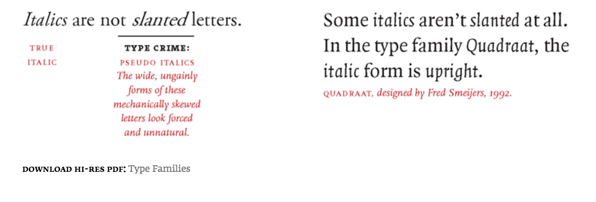
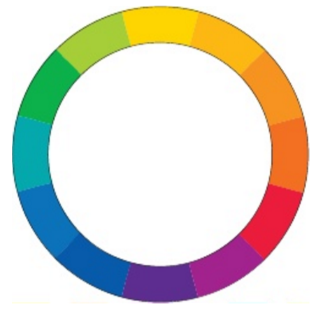
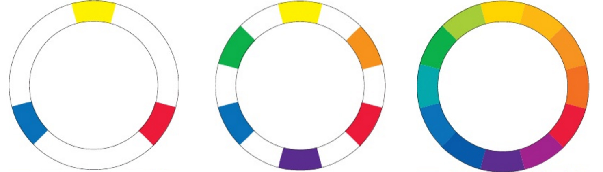

Design & Presentation
Design principles II
Typography basics
Fonts and how to use them
I'm a serif font
And I'm sans serif
Type
anatomy
Type classification
Type
families
Remember:
 Via Thinking With TypeMixing
typefaces
Guiding principle:
Typographic contrast
 Via The Non-Designer's Design Book
Via The Non-Designer's Design Book
 Via The Non-Designer's Design Book
Via The Non-Designer's Design Book
Color basics
How to use color effectively in design
The color wheel
Primary
Secondary
Tertiary
